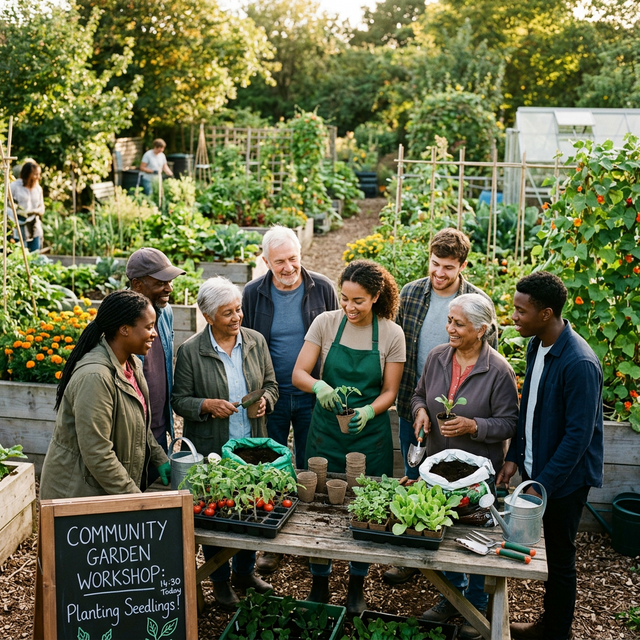
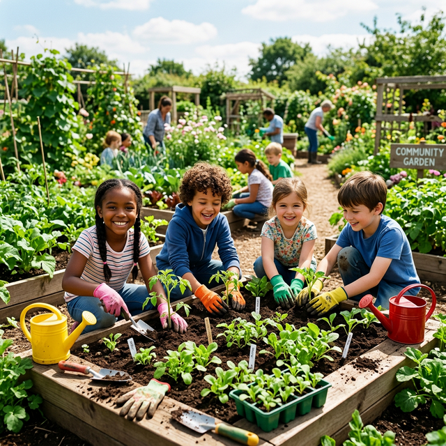
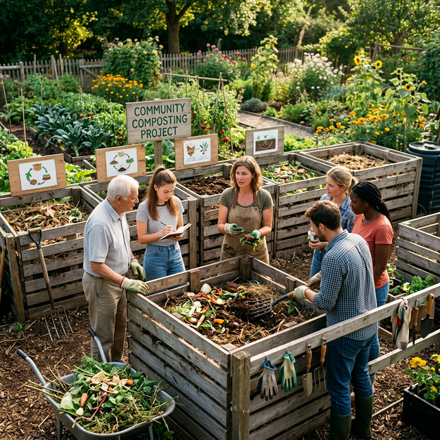
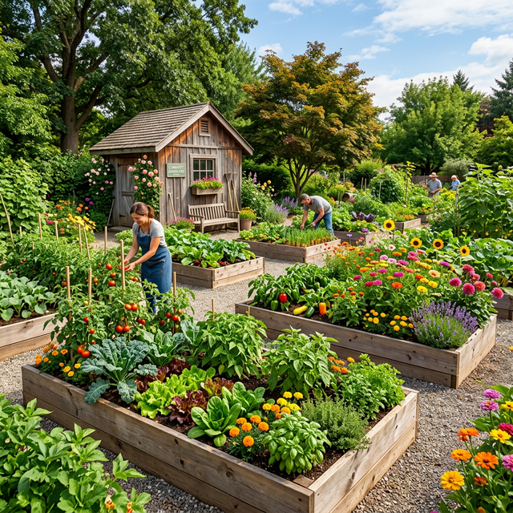
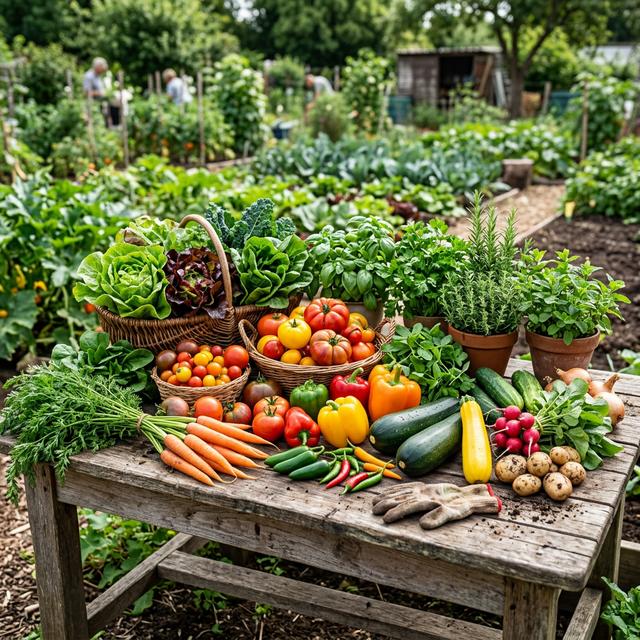

What We Offer
From renting your own garden plot to joining a workshop, there is something for everyone at GreenHaven.

🌻 Community Garden Plots
Rent your own raised bed (1.2m × 2.4m) and grow whatever you like. Each plot comes with:
- Fresh compost and soil top-up each season
- Access to shared tools and watering system
- Secure shed storage for personal items
- Support from our experienced volunteers

🌿 Gardening Workshops
Our monthly workshops cover a wide range of topics for beginners and experienced gardeners alike:
- Seed starting and propagation
- Organic pest and disease control
- Companion planting techniques
- Seasonal growing guides

🐛 Little Sprouts Kids' Club
A fun, hands-on programme for children aged 5 to 12, led by our youth coordinator David. Activities include:
- Planting and caring for their own mini plot
- Nature trails and wildlife spotting
- Eco-crafts and garden art projects
- Cooking simple dishes from garden produce

♻️ Composting Programme
Reduce your household waste and help the garden at the same time! Our composting programme includes:
- Community composting drop-off point
- Home composting starter kits (£3)
- Quarterly composting masterclasses
- Free finished compost for members

🙌 Volunteer Programme
Give back to the community while getting your hands in the soil. Volunteering opportunities include:
- Garden maintenance and planting
- Event support and setup
- Workshop assistance and mentoring
- Admin and social media help

🥕 Harvest Share Scheme
Enjoy weekly boxes of fresh, organically grown produce from the garden:
- Seasonal vegetable and herb selections
- Collected every Friday from the garden
- Supports the garden's running costs
- Recipe cards included in every box
Become a Member
Annual membership costs just £20 and gives you access to all programmes, events, free compost, and our member community. Concessions and hardship waivers are available - just ask.
Join GreenHaven Today